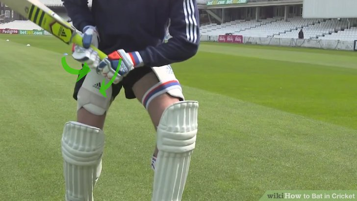
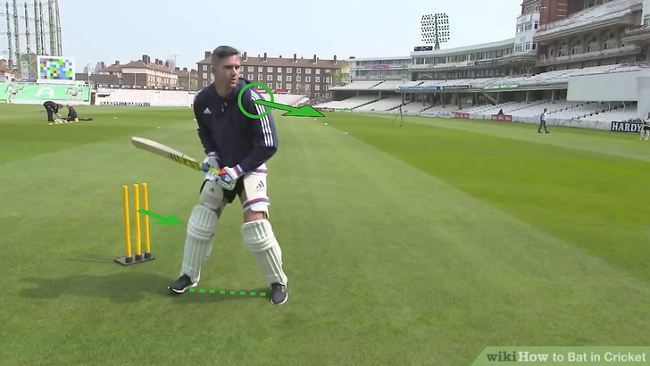
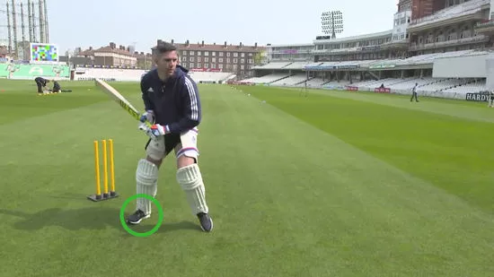

<!DOCTYPE html>
<html>
    <head>
    <title></title>
    <link href="https://cdn.jsdelivr.net/npm/bootstrap@5.3.0-alpha1/dist/css/bootstrap.min.css" rel="stylesheet">
</head></html>
<body style="background-color:rgb(233, 237, 241);">
    <nav class="navbar navbar-expand-lg navbar-dark bg-dark">
      <div class="container">
        <a class="navbar-brand" href="#">Cricket Tutorial</a>
        <button class="navbar-toggler" type="button" data-bs-toggle="collapse" data-bs-target="#navbarNav" aria-controls="navbarNav" aria-expanded="false" aria-label="Toggle navigation">
          <span class="navbar-toggler-icon"></span>
        </button>
        <div class="collapse navbar-collapse" id="navbarNav">
          <ul class="navbar-nav ms-auto">
            <li class="nav-item">
              <a class="nav-link " aria-current="page" href="miniproject.html">Home</a>
            </li>
            <li class="nav-item">
              <a class="nav-link" href="ABOUT2.html">Contact Us</a>
            </li>
            <li class="nav-item">
              <a class="nav-link active" href="tutorial1.html">Batting Techniques</a>
            </li>
            <li class="nav-item">
              <a class="nav-link" href="bowlingtut.html">Bowling Techniques</a>
            </li>
            <li class="nav-item">
              <a class="nav-link" href="fieldingtut1.html">Fielding Strategies</a>
            </li>
          </ul>
        </div>
      </div>
    </nav>
    
    <!-- Jumbotron -->
    <div class="jumbotron jumbotron-fluid">
      <div class="container text-center">
        
      </div>
    </div>
    
    <!-- Featured Content -->
    <div class="container">
        <div class="row">
          <div class="col-lg-4 mb-4">
            <div class="card">
              
              <div class="card-body">
                <h5 class="card-title"><span style="font-size: xx-large;">1</span> the cricket bat properly.<br></h5>
                <p class="card-text">
                     If you're right-handed, place your left hand on top of the handle towards the toe<br>
                      (the rounded tip of the cricket bat) with the right hand under it; left-handers place <br>
                      their hands the opposite way. The thumbs and forefingers should form a "V" between the <br>
                      outside edge and center of the bat that points towards the toe of the bat.[1]<br>
                    Batting gloves should be worn to protect your fingers if they get hit by the ball.
                    </p>
                
              </div>
            </div>
          </div>
          <div class="col-lg-4 mb-4">
            <div class="card">
              
              <div class="card-body">
                <h5 class="card-title"><span style="font-size: xx-large;">2</span>Assume the proper stance</h5>
                <p class="card-text"> If you're right-handed, stand sideways in the crease <BR>
                    (the "safe" area in front of the wicket) 
                    with your left shoulder towards the bowler (who "pitches" the ball);<br>
                     left-handed batters do the opposite. Look straight over your shoulder
                     towards the bowler; do not tilt your head. <br>Spread your feet about 12 inches (30.5 cm) apart and 
                    bend your knees slightly with your weight distributed evenly on both legs.[2]</p>
                    </div>
            </div></div>
    <div class="col-lg-4 mb-4">
      <div class="card">
        
        <div class="card-body">
          <h5 class="card-title">STEPS:</h5>
          <p class="card-text"><ul><li>Shift your weight to your back foot for longer pitches</li>
        <LI>Shift your weight to the foot closest to the bowler for a full pitch</LI>
    <LI> Try to hit the ball before it spins</LI>
<LI>Swing the bat properly</LI>
<LI>Decide whether to attempt to score a run or continue batting. </LI>
<LI>Select the right cricket bat</LI></ul></p>
          <a href="https://youtu.be/m8u-18Q0s7I?si=IhOmoUp2H1uJQA5l" class="btn btn-primary">Watch Now</a>
        </div>
      </div>
    </div>
                
              </div>
            </div>
          </div>
        </div>
      </div>
      
    </div>
    </body>
    </html>